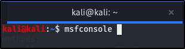

Enumerating SMB.
Now, our focus is on the enumeration of port 139 SMB.
Stands for "Server Message Block." SMB is a network protocol used by Windows-based computers that allows systems within the same network to share files. It allows computers connected to the same network or domain to access files from other local computers as easily as if they were on the computer's local hard drive.
Not only does SMB allow computers to share files, but it also enables computers to share printers and even serial ports from other computers within the network. For example, a computer connected to a Windows network could print a document on a printer connected to another computer on the network, as long as both machines support the SMB protocol.
Though SMB was originally developed for Windows, it can also be used by other platforms, including Unix and Mac OS X, using a software implementation called Samba. SMB is commonly used in work and internal enviroments
Alrigh, lets open up a terminal and we're going to be using a tool that would be very familiar to you by the end of this course, called Metasploit.Here's how to run it:

Metasploit is an exploitation framework and it does a lot more than exploitation, as you can see below:

The auxilliary modules is like scanning and enumeration, so we can do all types of information gathering with ths.The post modules, do post exploitation. Different types of payloads, that we're look at in the exploit section, we'll also be seeing another mestasploit tool called msfvenom in the exploitation section, using it to build payloads.
Please don't be overwhelmed by metasploit, I can promise that as you use it (which you will, a lot), it'll become second nature to you.
OK, we're going to take the beginner route here, so, type 'search smb' and press enter. Like this:

We're looking for the exact smb version from our nmap scan, we didn'tget a definite version and metasploit is going to pull out every module related to smb. For instance:

This is a post module.

This is a payload module

This is exploit module.

This is auxiliary module and exactly what we're lookingfor, which is the smb version.
Go ahead and copy the first higliigt in the image above, and paste it in like this:

It will take you to theauxiliary smb_version, it should look like this:

I want you to typr in info, so you can get an idea and syntax of how it works, info is like the regular CLI --help.

Instead of printing out this long step with info, you can just type options, which just gives you the available options in the selected module.


RHOSTS, stans for remote hosts, we'll see LHOST later which stands for local host. RHOST, is always the target, the machine we're attacking. When its RHOST, you can only import one host but multiple hosts when it's RHOSTS. In our instance, we're only attacking one machine, so RHOST.
Beacuse we don't have the details of any of the other given options, the domain, password and user, all we have is the IP address of our target, we won't be using any of the other given options.


So this gives us a little bit more information, which might notseem likea lot but knowing that it's Samba 2.2.1a, is specific and will help us out.
NB: Make sure you have an open note tab, where you're copying down your findings. Like the version, information from the nmap scan. I usually just create different nots and paste my scan in them, so I can go backlater and use it for my report or even exploitaions.
Aight, we're going to use a new tool, called smbclient. It's going to attempt to connect to the file share that's out there, these files might give us an idea of whta's going on in the target machine or even provide valuable information, like a backup file or something. If you don't search, you'll never know what you can find.
Here's the syntax, where -l is the command to list out the files. You can put just two (2) backslashes before the IP address, if you do that, thenyou don't need to put any slash after the IP.

This ultimately resulted in a dead end, we didn't get any extra information and that's quite sad for me but we'll come back to smbclient lot of times in the active directory section of this course, later on. We'll focus in depth on smb in the internal part, during the active directory. We're going to keep building on all this as we proceed, until we get a hang of it and a better understanding too
I know this doesn't seem like much, at all but i'm just keeping it simple (KISS), but I suggest you go out and read up on active directory in your free time.